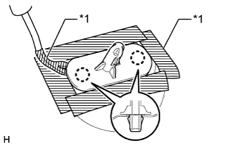

ЗАДНИЙ СПОЙЛЕР (для моделей с кронштейном запасного колеса) > СНЯТИЕ |
| 1. СНИМИТЕ ЦЕНТРАЛЬНУЮ ОБЛИЦОВКУ ДВЕРИ БАГАЖНОГО ОТДЕЛЕНИЯ |
 |
Освободите 4 фиксатора и снимите центральную облицовку двери багажного отделения.
| 2. СНИМИТЕ ЛЕВУЮ БОКОВУЮ ОБЛИЦОВКУ ДВЕРИ БАГАЖНОГО ОТДЕЛЕНИЯ |
 |
Освободите 2 фиксатора и захват и снимите боковую облицовку двери багажного отделения.
| 3. СНИМИТЕ ПРАВУЮ БОКОВУЮ ОБЛИЦОВКУ ДВЕРИ БАГАЖНОГО ОТДЕЛЕНИЯ |
 |
Освободите 2 фиксатора и захват и снимите боковую облицовку двери багажного отделения.
| 4. СНИМИТЕ ПРАВУЮ ПАНЕЛЬ ЗАДНЕГО СПОЙЛЕРА |
 |
Наклейте защитную ленту вокруг панели заднего спойлера.
С помощью отвертки освободите 2 фиксатора и снимите панель заднего спойлера, как показано на рисунке.
| *1 | Защитная клейкая лента |
| 5. СНИМИТЕ ЗАДНИЙ СПОЙЛЕР В СБОРЕ |
 |
Отсоедините разъем.
Снимите 2 уплотнительные шайбы и выверните 6 болтов.
Освободите 3 фиксатора и снимите задний спойлер.
| 6. СНИМИТЕ ЖЕСТКУЮ ПОДКЛАДКУ ДВЕРИ БАГАЖНОГО ОТДЕЛЕНИЯ № 2 |
|  |
Наклейте защитную ленту вокруг жесткой подкладки двери багажного отделения № 2.
С помощью съемника фиксаторов освободите 2 захвата и снимите жесткую подкладку двери багажного отделения № 2.
| *1 | Защитная клейкая лента |